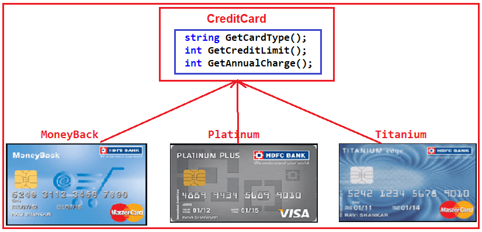
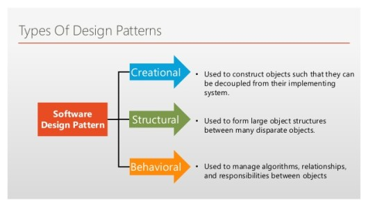
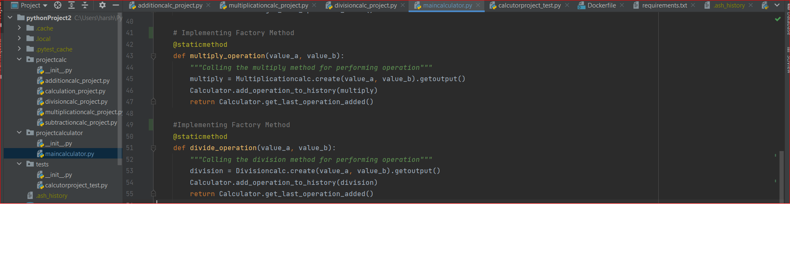
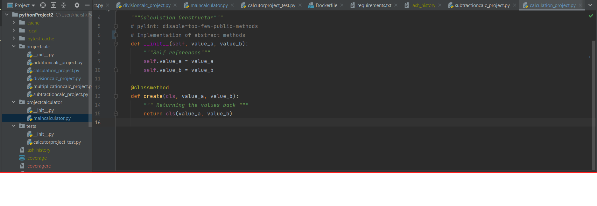

Design Patterns
Design Patterns is the most essential part of Software Engineering, as they provide the general repeatable solution to a commonly occurring problem in software design. They usually represent some of the best practices adopted by experienced object-oriented software developer.Design Patterns is the most fundamental piece of Software Engineering, as they give the overall repeatable answer for a normally happening issue in programming plan. They typically address the absolute accepted procedures embraced by experienced item situated programming engineer.Design patterns are meant for common problem-solving. Whenever there is a need, you have to implement a suitable pattern to avoid such problems in the future. To find out which pattern to use, you just have to try to understand the design patterns and their purposes. Only by doing that, you will be able to pick the right one.
Goal:
Comprehend the reason and utilization of each plan design to pick and execute the right example depending on the situation.
Real Life Example: Credit Card Scenario

Please have a look at the following diagram. Here, as you can see we have three credit card classes i.e. MoneyBack, Titanium, and Platinum and these three classes are the subclasses of CreditCard superclass or super interface. The CreditCard superclass or super interface has three methods i.e. GetCardType, GetCreditLimit, and GetAnnualCharge. The subclasses i.e. MoneyBack, Titanium, and Platinum have implemented the above three methods.
This illustrates the example of design patterns in the field of Banking and Finance.
Classification of Design Patterns
The design patterns can be broadly divided into three categories i.e Creational Design Patterns, Structural Design Patterns and Behavioral Design Pattern.
1) Creational Design Patterns : Creational patterns provides essential information regarding the Class instantiation or the object instantiation. Class Creational Pattern and the Object Creational pattern is the major categorization of the Creational Design Patterns. While class-creation patterns use inheritance effectively in the instantiation process, object-creation patterns use delegation effectively to get the job done.
2)Structural Design Patterns: Structural design patterns are about organizing different classes and objects to form larger structures and provide new functionality while keeping these structures flexible and efficient. Mostly they use Inheritance to compose all the interfaces. It also identifies the relationships which led to the simplification of the structure.

3)Behavioral Design Pattern: Behavioral patterns are all about identifying the common communication patterns between objects and realize these patterns. These patterns are concerned with algorithms and the assignment of responsibilities between objects.
Implementation of Design Patterns
A)Factory Method:
A Factory Method is a Creational Design Pattern that allows an interface or a class to produce an object while allowing subclasses to choose which class or object to create. We have the finest approaches to construct an object using the Factory function. Objects are formed without revealing the logic to the client, and the client utilizes the same common interface to construct the new type of object.
Example :

In our project, we have define methods such as divide_operation(), multiply_operation(), etc which allows the subclass to create an object when it receives the call from the calculatorproject_test class. We can easily use this code in the test project, by adding new assert statements without disturbing the existing code.
B)Abstraction Method:
The Abstract Factory Method is a Creational Design pattern that lets you create families of linked items without having to describe their particular classes. We have the simplest techniques to make a comparable kind of multiple objects using the abstract factory approach.It allows you to encapsulate a collection of individual factories. Essentially, we're attempting to abstract the development of objects based on logic, business, platform selection, and so on.
Example :

In our project, we have define methods such as def __init__() which allows to encapsulate an object when it receives the call from the additioncalc_project, multiplicationcalc_project class.